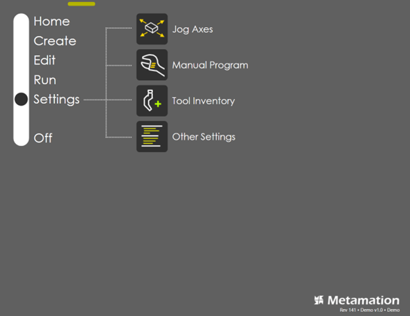
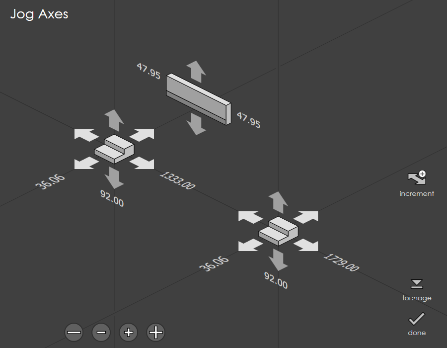
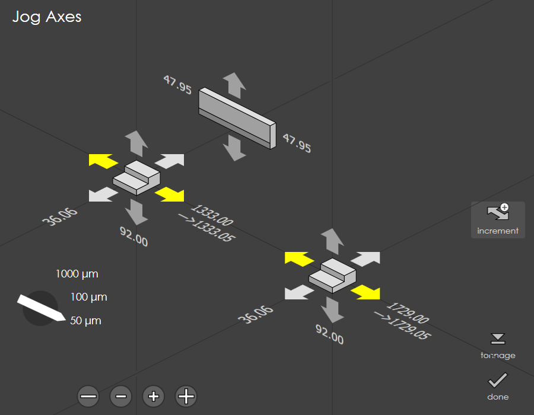
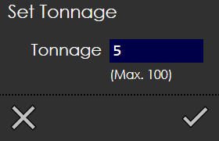
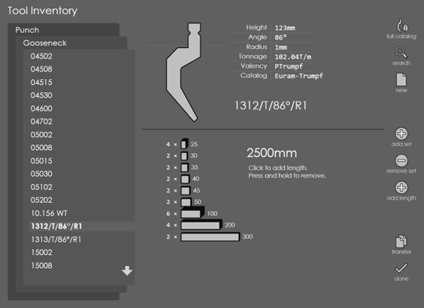
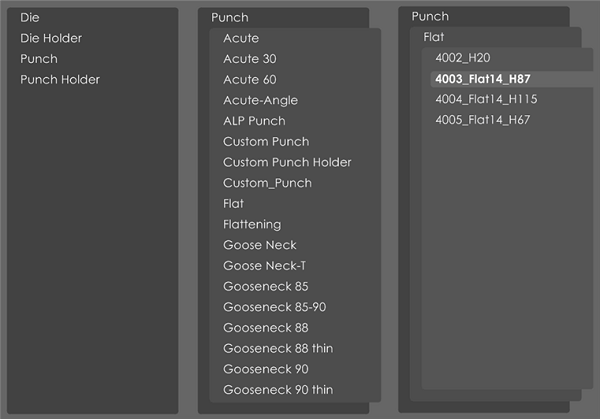
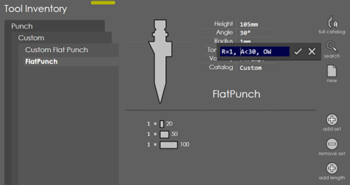
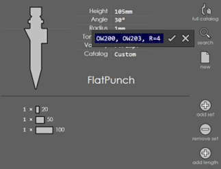
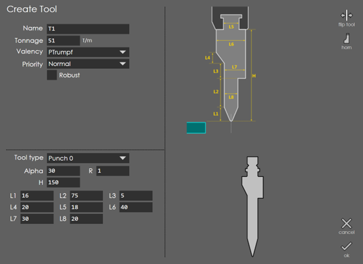
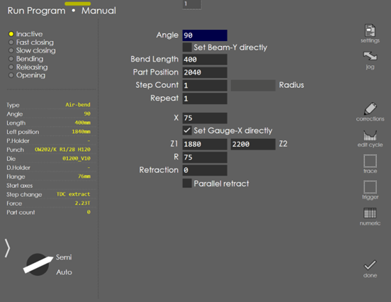

Settings
As seen in the picture below, the Settings page contains options which allows user to modify the Jog, the tool inventory used in and few more additional settings grouped together in the Other Settings section.

-
Multi-axis Jog
-
Manual program
-
Tool inventory
-
Other Settings
Multi-Axis Jog
This panel is used to move one or more axes of the machine either in jog mode, or by using a hand-wheel. The current positions of all the axes can also be viewed using this panel.
Jogging the axes
Each back-gauge is surrounded by 6 arrows which can be used to move it in one of the 6 primary directions. When you touch one of these axes, it lights up yellow while the axis is moving.

| On some press-brakes, the Jog Axes screen can be used to only select the axes to be jogged, and separate Jog Forward and Jog Backward buttons mounted on the operator panel must be pressed to do the actual axis movement. In that case, the jog axes panel will appear a bit different from the one shown in the picture above. |
The teach button is displayed (see picture below) when the axis jog panel has been called up while creating a direct program. Touching this button records the current back-gauge positions as the positions for the bending step that you are creating.

Jog Velocity:
Use this button to jog the axis before homing. This button will appear when the axes are not homed, denoted by * before current position.
Increment:
Use this button to jog the axis in step of 50 or 100 or 1000 micron. Direct Move: Click on the current position of back gauge or ram axis to enter the target position to which the axis should move. Machine will go to stop and on pressing the start, axis will start moving to the entered position. Target position is denoted after arrow symbol. To achieve this, no other mode should be active.
Tonnage:
Use this button to set the tonnage used during ram manual moves.

The actual real-time position will also be displayed (if a real run-time is connected, capable of providing the position).
Tool Inventory
This option is used to view and adjust the tool inventory. A complete tool catalogue for the type of tooling used on your press-brake is installed with RightAngle. You can select certain tools from this catalogue and tag them as being in your inventory by adjusting the quantities of the various pieces.

Full catalog:
Press this button to view the entire tooling catalogue that the system contains. You can then navigate to the tool of your choice. You can view the profile of the selected tool on the top right, along with its details. A few details like Height, Angle, Radius, Tonnage, VWidth, Valency etc. are displayed. In the bottom pane you can find additional tool details displaying the number of pieces the tool comprises as well as the total length of the tool. In case, if a tool has a valency that does not match the machine, there is a warning text displayed in yellow: Tool cannot be mounted directly on machine. This means the valency of the tool does not match that of the machine.
Search:
Touch this button to search for a particular tool. See Searching a tool for details.
New:
Touch this button to create a new tool. See Creating a custom tool for details.
Add Set:
Touch this button to add a complete set of standard pieces to the inventory of the selected tool. You can also touch an individual piece to add up that piece alone to the inventory.
Remove Set:
Use this option to remove a set of standard pieces from the tool inventory.
Add Length:
Press this button to add the length of the tool. Press the same and hold to remove.
Transfer:
Use this option to import or export tools. Once you press this button, you can find the Import and Export options being displayed. To export a tool, navigate to the corresponding tool and then press export. This opens the file selection panel. Select the directory in which you want to tool to be exported and then press the OK mark. This exports the selected tool with a .dxf extension. Similarly, you can import a .dxf/.arv file by selecting the tool traversing through the directories displayed in the file selection panel. This import and export options facilitate the exchange of defined tools across machines. Press the cancel mark to exit the transfer mode. You can create a clone of an existing tool by clicking Clone. By giving different tool height, we can change the height of tool while cloning. RightAngle will try to adjust tool geometry for the new height. If it fails, it modifies the reference point and give warning message. The tool is immediately opened for editing so you can adjust some parameters. To delete a tool permanently click on the Delete button. Note that this can be done only with tools that you imported. Tools that exist in standard tool catalogs cannot be deleted. Custom tools can be saved through save and load so that program can be used across RightAngle installed at different location.
Selecting a different tool
Selecting a different punch or die is a multiple-stage process. First touch the Punch indicator on the top to display a list of different types of tools. Then, touch the tool shape, and finally the actual tool name. Here are the 3 stages displayed in succession:

Searching a tool

The above search matches tools with Radius=1, Angle<30 and having OW in the name.

The above search matches all tools with OW200 OR OW203 in the name, and Radius=4.
The search string contains a list of comma-separated words. If a word is of the type:
-
A<30
-
R=1
-
H>140
-
V=12
Then it is a conditional. The values that can be compared are A (angle), R (radius), H (height) and V (v-width). the conditional operators are < = and >. If there are multiple conditionals, all of them must match. If a search word does not have any of these operators, it is a simple name-match and tools that contain the sequence in their name will match. If there are multiple names provided, any one of them needs to match the tool. The search string can be as complex as needed. For example, A<30, H>140, H<220, R=1, OW, EV
This will match all tools with OW or EV in the name, and matching these additional conditions: Angle<30, Height>140, Height<220, Radius=1.
| The < and > are really interpreted as ⇐ or >=. In other words, H<140 will match tools with height less than or equal to 140. |
Creating a custom tool

By entering the parameters explained in the diagram, custom tools can be created. We can create punch, die, punch holder, and die holder using above method.
Manual Program
Manual Program is used to run single bend with different tools and target. By default, this is turned off. It is available only when Settings → Other Settings → Machine Settings → General Parameters → Display → Allow manual programming is turned ON. Last run tool setup can be used, or tools can be changed through Settings.

Settings
Touch the Settings button on the right to bring up the Part Settings dialog where you can configure the settings like material, thickness, punch, die etc.
Jog
Tap the Jog button to bring up the Axis Jog Panel. This allows the user to freely move all the gauge axes using either the handwheel, or by holding down the jog buttons. From this panel, one can record the position of the gauges directly into the program by tapping the teach button there.
Corrections
Touch the corrections button to bring up the adjustment screen using which you can tweak bend angles after making a test piece and measuring the actual angles. You can also perform gauge adjustments by pressing the corresponding button in the Corrections dialog. See the section on Corrections for more details.
Cycle Editing
Touch the Edit Cycle button to bring up the bend cycle editor. This can be used to control the bending cycle position and speed. See the section on Cycle Editing for more details.
Numeric Panel
Touch the Numeric button to bring up the Numeric Panel. See Numeric Panel for more details.